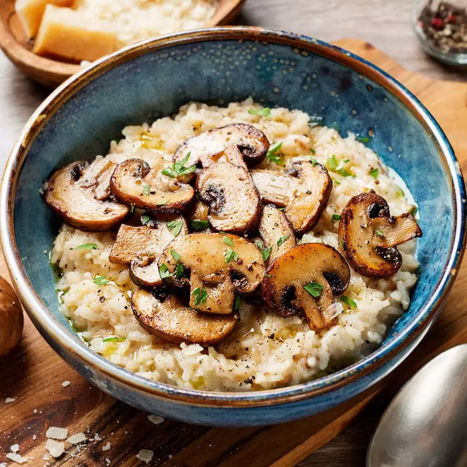

Receita de hoje: Risoto de Cogumelos

Ingredientes:
- 2 xícaras de arroz arbóreo
- 300g de cogumelos (shiitake, shimeji ou champignon), limpos e fatiados
- 1 cebola média, picada
- 2 dentes de alho, picados
- 1 taça de vinho branco seco
- 1 litro de caldo de legumes ou de galinha, aquecido
- 1 colher de sopa de manteiga
- 50g de queijo parmesão ralado
- 2 colheres de sopa de azeite de oliva
- Sal e pimenta-do-reino a gosto
- Salsinha fresca picada (opcional)
Modo de Preparo:
- Refogar os cogumelos:Em uma panela grande, aqueça uma colher de sopa de azeite e refogue os cogumelos até que fiquem dourados e macios.
Tempere com sal e pimenta. Retire e reserve.
- Refogar a cebola e o alho:Na mesma panela, adicione o restante do azeite e refogue a cebola até ficar transparente.
Acrescente o alho e refogue por mais 1 minuto.
- Adicionar o arroz:Adicione o arroz arbóreo à panela e refogue por 2 a 3 minutos,
mexendo sempre, até que os grãos estejam levemente dourados e envolvidos pelo azeite.
- Deglacear com o vinho:Despeje o vinho branco e mexa até que o álcool evapore e o líquido seja quase totalmente absorvido.
- Cozinhar o arroz:Comece a adicionar o caldo de legumes, uma concha por vez, mexendo constantemente. À medida que o caldo for sendo absorvido,
adicione mais, repetindo o processo até o arroz ficar al dente (cerca de 18 a 20 minutos). Não deixe de mexer para garantir uma textura cremosa.
- Finalizar o risoto:Quando o arroz estiver quase pronto, adicione os cogumelos refogados, misture bem e ajuste o sal e a pimenta.
Retire a panela do fogo, acrescente a manteiga e o queijo parmesão, e mexa até derreter e ficar cremoso.
- Servir:Decore com salsinha picada e sirva imediatamente.